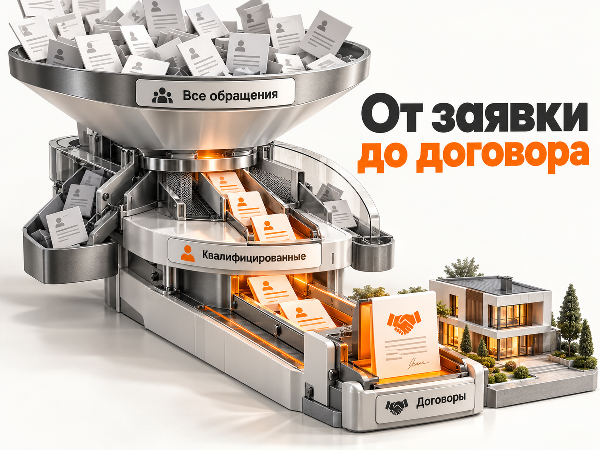

Блог о платном трафике
Яндекс Директ для строительной компании: как получать заявки на строительство
Яндекс Директ помогает строительной компании получать заявки от людей, которые ищут подрядчика, сравнивают технологии строительства, изучают проекты и рассчитывают стоимость работ. Для результата нужно разделить рекламу по направлениям, подобрать коммерческие запросы, подготовить посадочные страницы и настроить учёт обращений.
Начинать лучше с Поиска, где уже существует сформированный спрос. РСЯ можно использовать для расширения аудитории и повторных контактов. При этом эффективность рекламы стоит измерять не только количеством заявок, но и тем, сколько потенциальных клиентов подходят компании по бюджету, географии, типу объекта и срокам строительства.
В моём проекте по продвижению строительства домов стоимость заявки к концу первого месяца удалось снизить с более чем 4000 до примерно 2100 ₽. Это пример конкретной рекламной кампании, а не среднерыночная стоимость лида.
Какие задачи решает Яндекс Директ в строительстве
Для строительной компании Директ решает две основные задачи: привлекает людей с готовой потребностью и помогает возвращать потенциальных заказчиков, которые пока сравнивают предложения.
На Поиске можно работать с запросами вроде «строительство домов под ключ», «подрядчик на строительство склада» или «построить дом из газобетона».
В РСЯ реклама может показываться аудитории, которая интересуется соответствующими услугами, а также посетителям сайта, которые уже изучали проекты, комплектации и условия.
Период выбора подрядчика нередко растягивается на несколько недель или месяцев. Заказчик изучает сметы, технологии, реальные объекты, отзывы и условия договора. Поэтому одна рекламная кампания без продуманной посадочной страницы и последующей работы с обращениями редко решает всю задачу.
Особенно важно различать два направления:
- Частное строительство: коттеджи, каркасные и каменные дома, фундаменты, реконструкция.
- Коммерческое строительство: склады, ангары, производственные здания, подрядные и субподрядные работы.
У них разная аудитория, поисковые запросы, требования к подрядчику и экономика сделки.
Как разделить рекламные кампании по строительным услугам
Рекламную структуру лучше строить вокруг реальных услуг компании, а не объединять весь строительный спрос в одну группу.
| Направление | Пример поискового запроса | Подходящая страница |
|---|---|---|
| Дома под ключ | строительство дома под ключ | Проекты и комплектации домов |
| Газобетон | дом из газобетона под ключ | Строительство из газобетона |
| Каркасные дома | заказать каркасный дом | Каталог каркасных домов |
| Фундаменты | строительство фундамента | Виды фундаментов и расчёт |
| Проектирование | заказать проект дома | Проектирование домов |
| Коммерческие объекты | строительство склада под ключ | Коммерческое строительство |
Например, человеку, который ищет каркасный дом, желательно показывать объявление с конкретной технологией и направлять его на страницу с каркасными проектами. На ней должны быть фотографии, комплектации, цены или принципы расчёта стоимости.
Но разделение по услугам не означает, что под каждую ключевую фразу необходима отдельная кампания. Если трафика и обращений мало, избыточная структура только усложнит управление и распределит статистику между множеством небольших сегментов.
На старте достаточно выделить основные направления, по которым действительно различаются предложения, посадочные страницы и целевая стоимость заявки.
Какие кампании использовать: Поиск или РСЯ
Для строительной компании разумно начинать с наиболее коммерческого спроса на Поиске, а РСЯ подключать с отдельной оценкой стоимости и качества обращений.
В Единой перфоманс-кампании Яндекс Директа можно выбирать места показов, управлять группами, аудиториями, объявлениями и стратегиями. Для раздельного контроля поискового и сетевого трафика удобно использовать отдельные кампании, когда это оправдано бюджетом.
| Критерий | Поиск Яндекса | РСЯ |
|---|---|---|
| Потребность | Пользователь сам ищет услугу | Система подбирает подходящую аудиторию |
| Сильная сторона | Сформированный коммерческий спрос | Расширение охвата и повторные контакты |
| Объявления | Точное соответствие запросу | Фото объектов, проекты, офферы |
| Основной риск | Дорогая конкуренция за запросы | Много интересующихся без готовности заказать |
| Оценка эффективности | Стоимость квалифицированного лида | Стоимость и качество квалифицированного лида |
Поиск: какие запросы использовать
Первый приоритет - фразы, указывающие на намерение заказать строительство.
Примеры:
- строительство домов под ключ;
- построить дом из газобетона цена;
- заказать каркасный дом;
- строительная компания Ростов-на-Дону;
- строительство фундамента под ключ;
- генподрядчик на строительство склада;
- строительство производственного здания.
Для каждого направления полезно выделить прямые коммерческие, технологические и геозависимые запросы.
Одновременно необходимо прорабатывать минус-фразы. Например, запросы о самостоятельном строительстве, вакансиях, обучении или бесплатных чертежах могут оказаться нерелевантными для компании, которая оказывает подрядные услуги.
Минус-фразы нельзя составить один раз и забыть. После запуска нужно регулярно изучать реальные поисковые запросы, включая трафик по автотаргетингу.
Важно проверять и географию. Если компания строит дома только в Ростовской области, заявки из других регионов могут расходовать бюджет без перспективы заключить договор.
Подробнее о структуре и параметрах запуска: «Как настроить рекламу в Яндекс Директ».
РСЯ: как привлекать заинтересованную аудиторию
В РСЯ особенно важны рекламные изображения. Для строительной компании лучший исходный материал - собственные построенные объекты, а не фотографии условных красивых домов из фотобанка.
В объявлениях можно тестировать разные предложения: строительство под ключ, конкретную технологию, готовые проекты, расчёт стоимости, сроки и комплектации.
Отдельное направление - ретаргетинг на посетителей, которые смотрели проекты, изучали стоимость или начинали заполнять форму, но не оставили заявку.
Для таких людей полезно показать конкретный объект или предложить получить расчёт сметы.
Не стоит автоматически считать РСЯ более выгодным каналом из-за низкой стоимости первого обращения. Сравнивать нужно долю подходящих клиентов и последующие этапы продаж.
Подробнее: «Что такое РСЯ в Яндекс Директ».
Какой должна быть посадочная страница строительной компании
Посадочная страница должна отвечать на главный вопрос посетителя: может ли эта компания построить нужный объект за подходящие деньги и на понятных условиях.
Минимально полезная структура страницы:
- Предложение. Что строит компания, где работает и какая услуга доступна.
- Проекты и портфолио. Реальные фотографии, площадь, технология, выполненные работы.
- Цена и комплектация. Стоимость типовых решений либо понятное объяснение состава сметы.
- Сроки строительства. Этапы работ и реалистичные условия выполнения.
- Доверие. Опыт, документы, отзывы, гарантии и реальные объекты.
- Получение расчёта. Простая форма, звонок или заявка на консультацию.
В строительстве особенно важно не обещать привлекательную цену без указания комплектации.
Например, стоимость коробки дома и стоимость полностью готового дома отличаются из-за фундамента, инженерных систем, отделки и других работ. Если рекламное объявление создаёт неверные ожидания, менеджеры получат больше нецелевых обращений.
Отдельный сайт для каждой технологии не нужен. Достаточно создать самостоятельные страницы для основных направлений.
Если компания рекламирует строительство из газобетона, страница должна показывать именно эти дома, соответствующие проекты, особенности материала и состав работ.
Подробнее: «Что такое лендинг в Яндекс Директе».
Как получать не просто заявки, а потенциальных заказчиков
Квалифицированная заявка в строительстве - это обращение человека, которому подходит услуга компании и с которым есть предметная перспектива обсуждать проект.
Не все заявки равноценны. Часть посетителей интересуется ориентировочной ценой, пока не имеет участка, планирует строительство через несколько лет или располагает бюджетом ниже минимальной стоимости работ.
Поэтому при квалификации стоит выяснять:
- Какой объект планируется строить.
- Где расположен участок или строительная площадка.
- Есть ли участок либо возможность начать работы.
- Какая площадь и технология интересуют заказчика.
- Какой предполагается бюджет.
- Когда клиент планирует строительство.
- Какие работы ему необходимы: коробка, тёплый контур, отделка или строительство под ключ.
Не обязательно превращать все эти вопросы в длинную форму на сайте. Часть сведений можно получить при разговоре с менеджером.
Например, форма может содержать тип объекта, площадь, срок начала работ и номер телефона. Остальные вопросы уточняются после обращения.
Для анализа рекламы полезно выделять три основных уровня:
- Все реальные обращения.
- Квалифицированные обращения, которые соответствуют услугам и возможностям подрядчика.
- Договоры, заключённые с привлечёнными клиентами.

Отдельно можно учитывать расчёты сметы и встречи. Это особенно полезно при длинном цикле сделки, когда договоры появляются значительно позже первого контакта.
Важный принцип: реклама, которая приносит заявки по 2000 ₽, не обязательно эффективнее рекламы с заявками по 5000 ₽. Если во втором случае значительно больше людей подходит компании, стоимость квалифицированного обращения может оказаться ниже.
Как настроить Яндекс Метрику, звонки и CRM
Аналитика строительной компании должна учитывать не только отправленные формы, но и звонки, обращения через мессенджеры и последующие результаты отдела продаж.
Перед запуском необходимо проверить:
- Отправку форм и квизов.
- Реальные телефонные обращения через коллтрекинг.
- Обращения через мессенджеры, если доступна интеграция для фиксации фактических сообщений.
- Передачу источника, кампании и идентификаторов визита в CRM.
- Статусы квалификации заявок.
- Передачу подходящих офлайн-конверсий обратно в Метрику.
Клик по кнопке мессенджера не равен отправленному сообщению. Аналогично клик по телефонному номеру не всегда означает состоявшийся разговор.
Поэтому для точной аналитики важно получать подтверждение обращения из телефонии, CRM или подключённого сервиса интеграции.
Яндекс Директ позволяет использовать офлайн-конверсии для анализа и оптимизации рекламы. Например, данные о квалифицированных обращениях из CRM помогают увидеть, какие кампании приводят потенциальных заказчиков, а не просто людей, которые охотно заполняют формы.
Для связывания событий с визитами используются идентификаторы, включая ClientID. Передачу данных нужно организовать своевременно, с учётом ограничений атрибуции.
В строительстве это особенно важно: первый контакт может произойти сегодня, смета обсуждаться через несколько дней, а договор подписываться значительно позже.
Если учитывать только немедленные отправки форм, часть реальной ценности рекламных кампаний останется вне отчёта.
Какую стратегию Яндекс Директа выбрать
Стратегию нужно выбирать по объёму доступных конверсий и тому, насколько качественно они отражают коммерческий интерес.
Если компания уже получает достаточно обращений и настроила Метрику, можно использовать стратегию «Максимум конверсий» с подходящими ограничениями.
Но если квалифицированных заявок всего несколько в месяц, обучение непосредственно на этой редкой цели может оказаться нестабильным.
В такой ситуации сначала стоит проверить доступный объём спроса, объединить слишком мелкие сегменты и использовать достаточно частую, но содержательную цель. При этом качество обращений необходимо продолжать контролировать в CRM.
Не рекомендую выбирать в качестве главной цели обычный просмотр страницы или любое нажатие на кнопку, если такие события не отражают реальный интерес к строительству.
Оплата за конверсии также не является универсальным решением. Она требует реалистичного бюджета, корректных целей и достаточного количества целевых действий.
Подробнее: «Какую стратегию выбрать в Яндекс Директ».
Сколько стоит Яндекс Директ для строительной компании
Универсальной цены клика и заявки для строительных компаний нет. Стоимость рекламы зависит от региона, конкуренции, направления строительства, качества посадочной страницы и готовности аудитории заказать услугу.
Для предварительного расчёта нужно определить три показателя:
- Предполагаемую стоимость клика.
- Конверсию сайта в обращение.
- Долю квалифицированных обращений.
Рассмотрим условный рекламный бюджет 120 000 ₽ и среднюю цену клика 200 ₽. Это параметры учебного расчёта, а не подтверждённые среднерыночные показатели строительной отрасли.
При таких условиях реклама приведёт 600 кликов.
| Показатель | Конверсия 2% | Конверсия 3% | Конверсия 5% |
|---|---|---|---|
| Рекламный бюджет | 120 000 ₽ | 120 000 ₽ | 120 000 ₽ |
| Клики | 600 | 600 | 600 |
| Заявки | 12 | 18 | 30 |
| Стоимость заявки | 10 000 ₽ | 6667 ₽ | 4000 ₽ |
| Квалифицированные лиды при доле 50% | 6 | 9 | 15 |
| Стоимость квалифицированного лида | 20 000 ₽ | 13 333 ₽ | 8000 ₽ |
Расчёты округлены до целых рублей. Количество заявок определяется как число кликов, умноженное на конверсию сайта. Стоимость заявки равна рекламному бюджету, разделённому на число заявок.
Эти сценарии показывают, насколько сильно результат зависит от сайта и качества поступающих обращений.
При одинаковых расходах стоимость квалифицированного лида в примере меняется от 8000 до 20 000 ₽.
Однако более высокая конверсия не гарантирует лучшего результата. Если сайт привлекает много случайных обращений, доля квалифицированных клиентов может снижаться.
Фактический прогноз следует строить по конкретному региону, типу строительства, конкурентным предложениям и данным прогноза Яндекс Директа. В первоначальный расчёт также важно отдельно включить НДС и стоимость работ по настройке и ведению рекламы, если они не входят в рекламный бюджет.
Как рассчитать допустимую стоимость заявки
Допустимая стоимость заявки зависит от экономики договора, а не от средних значений в рекламных кейсах.
Например, строительная компания определила, что может расходовать на привлечение одного нового договора не больше 100 000 ₽.
Если из десяти квалифицированных обращений заключается один договор, допустимая стоимость квалифицированного лида составит:
100 000 ₽ × 10% = 10 000 ₽.
Если квалифицированными оказываются только 50% всех заявок, допустимая стоимость обычного обращения:
10 000 ₽ × 50% = 5000 ₽.
В условной модели компания должна стремиться к стоимости заявки не выше 5000 ₽, чтобы сохранять заданную экономику привлечения.
Это не норматив для строительного рынка. Реальный допустимый CAC необходимо определять с учётом прибыли от договора, расходов на выполнение работ и финансовой модели бизнеса.
Если маржа объекта высокая, компания может позволить себе более дорогое привлечение. Если работы низкомаржинальные, даже сравнительно дешёвые заявки могут оказаться невыгодными.
При планировании следует также учитывать, что часть потенциальных договоров не закроется в том же месяце, в котором были оплачены рекламные клики.
Для самостоятельных расчётов можно использовать калькулятор бюджета рекламы.
Реальный кейс: заявки на строительство домов из Porotherm
В одном из моих проектов продвигалось строительство частных домов из керамического блока Porotherm.
Для привлечения потенциальных заказчиков использовались рекламные кампании на Поиске Яндекса и в РСЯ.
В течение первой недели стоимость обращения превышала 4000 ₽. К концу первого месяца её удалось снизить примерно до 2100 ₽.
Реклама работала одновременно с кампаниями самого заказчика, при этом основная часть обращений поступала из настроенных мной кампаний.
Этот пример показывает, почему в строительной тематике не стоит оценивать эффективность только по первым дням запуска.
Кампаниям необходимо накопить статистику, а специалисту - проверить поисковые запросы, аудитории, объявления и фактическое качество обращений.
При этом стоимость обычной заявки в кейсе не следует автоматически считать стоимостью квалифицированного лида или заключённого договора. Для такого вывода необходимы отдельные данные отдела продаж.
Подробности: «Продвижение строительства домов в Яндекс Директе».
Что чаще всего мешает получать заявки на строительство
Весь трафик направляют на главную страницу
Человек ищет строительство каркасного дома, а попадает на сайт, где одновременно рекламируются фундаменты, ремонт, проектирование и другие услуги.
Это усложняет выбор и снижает соответствие страницы запросу.
Используют слишком широкие запросы
Слова «строительство», «дома», «ремонт» без достаточного уточнения намерения привлекают много нецелевой аудитории.
Решение - разделять коммерческий спрос и регулярно проверять реальные поисковые запросы.
Показывают привлекательную цену без комплектации
Посетитель рассчитывает получить полноценный дом, а указанная стоимость относится только к части строительных работ.
Такие расхождения приводят к недоверию и нецелевым обращениям.
Не учитывают звонки и качество лидов
В отчёте видны формы, но не видны телефонные обращения, реальный бюджет заказчиков и результаты обсуждения смет.
В результате часть эффективных кампаний может быть ошибочно отключена, а бюджет останется у направлений с дешёвыми, но бесполезными заявками.
Постоянно меняют настройки
Стратегию, цели и бюджет пересматривают до того, как накопились данные для объективной оценки.
Это мешает сравнивать периоды и разбираться в причинах изменения результатов.
Не учитывают возможности отдела продаж
Даже хороший поток обращений не принесёт ожидаемых договоров, если менеджеры отвечают с задержкой, не уточняют задачу заказчика или не возвращаются к клиентам после отправки сметы.
Реклама не заменяет работу с потенциальными клиентами.
Если кампании уже запущены, но результат не устраивает, полезно провести аудит Яндекс Директа.
Как я бы запускал Яндекс Директ для строительной компании
Для нового строительного проекта я бы использовал следующую последовательность.
- Определить приоритетные услуги. Выяснить, какие объекты компания действительно хочет строить, в каких регионах и с какой маржинальностью.
- Исследовать спрос. Собрать коммерческие запросы, изучить конкурентов и оценить доступный объём поискового трафика.
- Проверить предложение и сайт. Подготовить понятные посадочные страницы с проектами, комплектациями, реальными фотографиями и формой расчёта.
- Рассчитать экономику. Установить допустимую стоимость обычной и квалифицированной заявки, ориентируясь на стоимость договора и конверсию отдела продаж.
- Настроить аналитику. Подключить Метрику, отслеживание звонков, реальные обращения через мессенджеры и передачу данных в CRM.
- Запустить Поиск. Начать с наиболее целевого спроса и контролировать реальные поисковые запросы и автотаргетинг.
- Протестировать РСЯ. Использовать реальные фотографии объектов, отдельные предложения и ретаргетинг, если для этого достаточно аудитории и бюджета.
- Оценить качество обращений. Получать обратную связь от менеджеров и сравнивать направления по квалифицированным лидам, а не только по первичному CPL.
- Перераспределить бюджет. Усиливать те кампании, которые дают перспективных заказчиков и соответствуют экономике строительной компании.
Главная задача не в том, чтобы получить максимальное число дешёвых форм. Нужно создать систему, в которой рекламные расходы связаны с реальными строительными проектами и будущими договорами.
Сколько времени нужно, чтобы оценить результат
По первым нескольким дням рекламы обычно нельзя надёжно определить реальную стоимость привлечения клиента.
Сначала нужно убедиться, что кампании получают показы, корректно расходуют бюджет и приводят целевой трафик.
Затем оцениваются обращения, их качество и работа посадочной страницы. На более длительном периоде появляется возможность анализировать расчёты смет, встречи и договоры.
Для строительной компании важно сопоставлять расходы с датами появления заявок и последующего заключения договоров. Иначе реклама, которая уже привела потенциальных клиентов, может выглядеть неэффективной только потому, что сделки ещё не завершились.
Нужен ли отдельный лендинг для каждого направления строительства
Отдельный сайт не обязателен, но посадочные страницы для основных услуг желательно разделять.
Например, строительство каркасных домов и строительство складских помещений требуют разных предложений, доказательств компетентности и формы обращения.
На одном сайте можно создать полноценные страницы для каждого направления и направлять рекламный трафик непосредственно на них.
Подойдёт ли Яндекс Директ строительной компании с небольшим бюджетом
Подойдёт, если в регионе есть достаточный коммерческий спрос, а бюджета хватает на получение значимого количества переходов и заявок.
Но небольшие расходы не означают автоматически дешёвые лиды. При дорогих кликах и низкой конверсии сайт может получить слишком мало обращений для надёжной оценки рекламы.
Поэтому разумнее сначала выбрать одно приоритетное направление, рассчитать ожидаемый объём трафика и проверить экономику, чем одновременно рекламировать все услуги компании.
Кто может настроить Яндекс Директ для строительной компании
Я занимаюсь настройкой и ведением Яндекс Директа более 10 лет. Работал с рекламой строительства частных домов, недвижимости и другими проектами с длительным циклом выбора.
В работе учитываю не только рекламные показатели, но и качество заявок, посадочные страницы и данные отдела продаж.
Для расчёта рекламного бюджета строительной компании нужны основные направления работ, география, сайт и информация о стоимости договоров. По этим данным можно определить приоритетные рекламные кампании и подготовить обоснованный прогноз.
Связаться со мной можно через Telegram или мессенджер Макс.